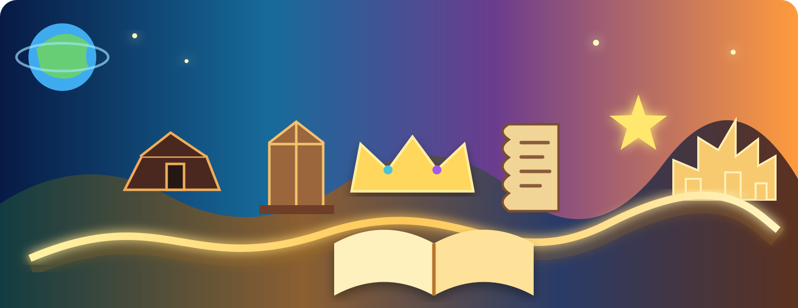

01
Pilihan Ganda
Alkitab
Pertanyaan akan tampil di sini.
NILAI SEMENTARA0/100
Belajar sambil bermain
Masukkan nama panggilan, pilih mode, lalu mainkan tahap mana saja. Soal dimulai dari mudah dan semakin menantang.
Perjalanan lengkap dari dasar hingga eksegese dan penerapan.
Tahap 1–5: 5 soal · Tahap 6–100: 10 soal

💡 Setiap tahap berisi campuran pilihan ganda, tebak tokoh, benar atau salah, dan esai.
Pilihan Ganda
Alkitab
Nilai tahap